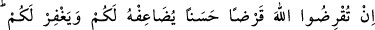
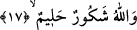
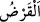

karıştırılmış olan bir düşüklükten, nefsinin cimriliğinden korur ve kurtarırsa –ki bununla
ilgili açıklama Haşr suresinde geçmişti- (İşte onlar kurtuluşa erenlerdir) Bütün
maksadlarına ve amaçlarına ulaşanlardır. Bir hadis-i şerifte şöyle buyrulmuştur: “Bir
insanın hakkımı alıyorum, hakkıma dâir hiçbir şeyi terketmiyorum demesi cimrilik
olarak o kişiye yeter”[171]
Asmâi’den nakledilen bir hadis-i şerif şöyledir: “Bedevinin birisi bir topluluğa
getirilir. Bedevi onlara şu hak uğrundadır ya da o haktan daha hayırlıdır” der. Topluluk
“haktan daha hayırlı olan nedir” deyince bedevi, “hakkını alırken lütufta bulunmak ve
biraz göz yummak, hakkını tamamen almaktan daha üstündür” der.[172] Bu sözün
aynısı el-Makâsıdu’l-hasene’de geçmektedir.
Yüce Allah: “Kim cimrilik ederse ancak kendisine cimrilik etmiş olur.”
(Muhammed, 47/38) “Kim nefsinin cimriliğinden korunursa işte onlar kurtuluşa
erenlerdir.” (et-Teğabun, 64/16) buyurmaktadır?”[173] der.
İhtiyaç sâhibi kimselerin gönüllerini sevindir
Bir gün onlar gibi ihtiyaç sâhibi olabileceğini düşün.
Sen başkalarının kapısında dilenci değilsin
Bunun şükrü gereği kapından dilenciyi kovma.
Bu âyet-i kerimede gerek ilmi, gerek malı ile bir başkasına yardımcı olup harcamanın,
aslında insanın kendine harcaması demek olduğuna işâret vardır. Zira bütün insanlar,
birlikte gayrılık olmadığı için, bir tek nefis gibidirler. Yine bu âyet-i kerimede Allah
yolunda mecâzî varlığa harcama yapmaya muvaffak kılınan kimse, Allah tarafından
gerçek varlığı kazanacağına dâir işâret de vardır.
17. Eğer Allah’a (rızâsı uğruna) ödünç verirseniz, Allah onu sizin için kat kat
arttırır ve sizi bağışlar. Allah çok mükâfat verendir, cezâ vermekte acele
etmeyendir.
Mallarınızı Allah’ın belirlemiş olduğu harcama yerlerine harcamak sûretiyle “eğer
Allah’a ödünç verirseniz” Keşşaf’ta işâret edildiği gibi burada “__WORD__/el-karz”
kelimesinin kullanılması çağrıda yumuşaklık sağlamak içindir. el-Lübab’ta denirki:
Arapçada ‘karz’ kesmek demektir. Nitekim makas anlamına “mikraz” kelimesi kesmek
anlamına gelen karz’dan türemiştir. Mikraz’a böyle denmesinin sebebi kendisinin
kesmede âlet olarak kullanılmasından dolayıdır. Yine karz kelimesinden türeme olarak